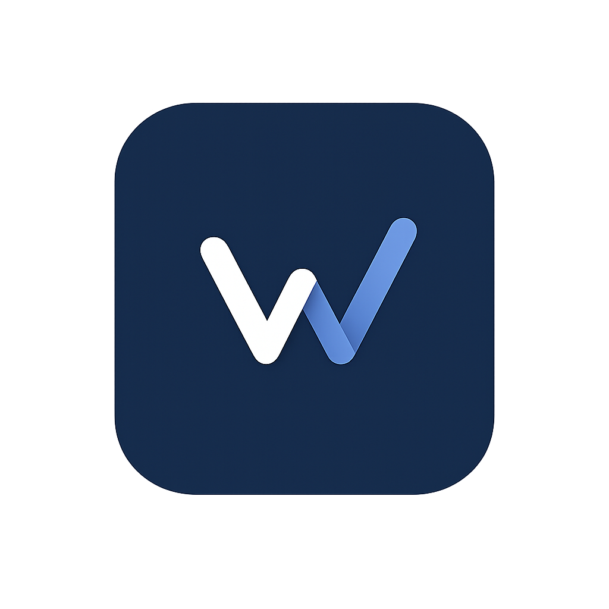

Wand sits quietly in your browser and tracks every job you apply to — automatically. No copy-pasting, no spreadsheets. Just apply, and Wand handles the rest.
When you're on a job page, a Wand button appears on the right edge of your screen. Hover it to reveal your options — no clicks needed to get started.
Wand auto-detects job applications across all major ATS platforms and job boards — right out of the box.
Wand is now active. Visit any job page — the Wand button will appear on the right edge whenever it detects an application page.